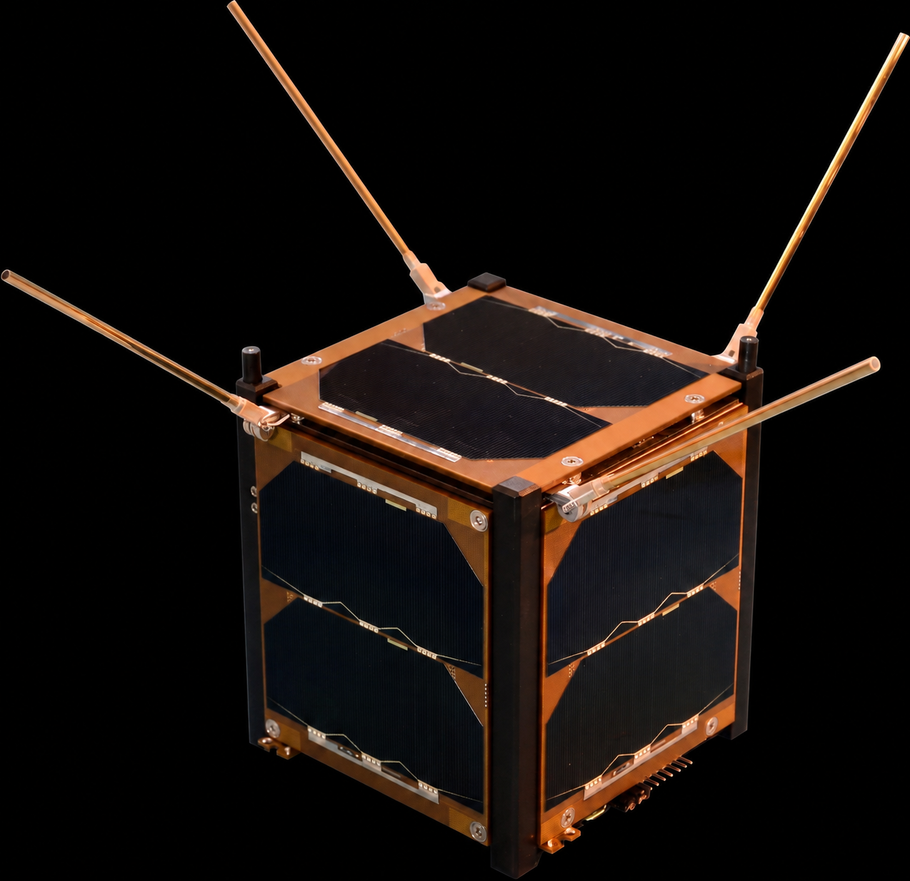
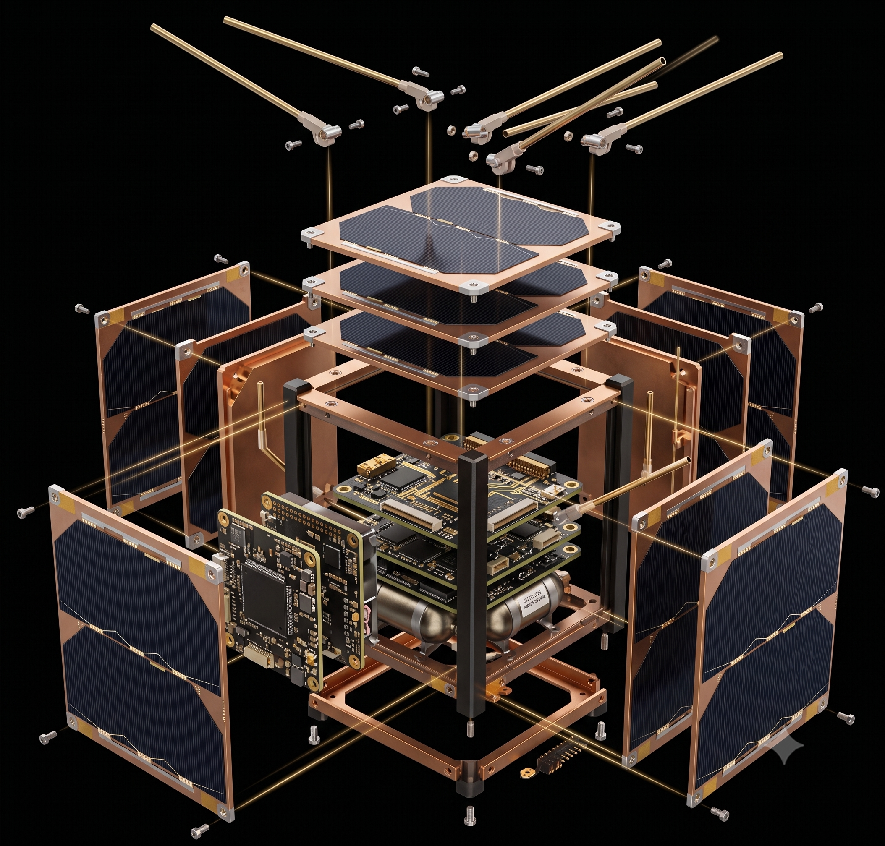

Where Satellite Data
Meets Intelligent Analysis.
Explore satellite imagery with intelligent analysis.
Ask questions. Discover insights.
Get started with satellite intelligence

Understand the Earth
through its data.
SatQuery transforms remote-sensing imagery into meaningful answers through natural-language queries.

From imagery
to insight.
Specialized analysis tools work together to turn satellite imagery into meaningful information.
NDVI
Analyze vegetation health and identify changes in vegetation across an area.
NDWI
Detect and analyze water features within remote-sensing imagery.
Change Detection
Compare imagery to identify meaningful changes between observations.
Vision-Language
Ask natural-language questions about satellite imagery and receive grounded answers.
Ask a question.
Get an answer.
SatQuery turns natural-language questions into specialized satellite analysis and evidence-grounded results.
Query
Ask SatQuery a question about your satellite imagery.
Understand
The system interprets and validates the requested task.
Analyze
The appropriate remote-sensing analysis is selected and executed.
Answer
Results and evidence are returned in an understandable form.
Explore the Earth
differently.
Turn satellite imagery into answers with SatQuery.